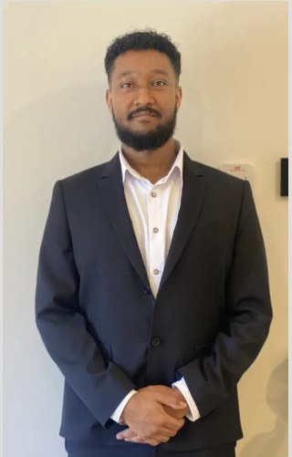

About Me
Mechanical Engineering & Computer Science Student
I am a Mechanical Engineering and Computer Science student at Griffith University with a strong interest in mechanical systems, control, and engineering analysis. I ended up in this degree because I enjoy understanding how things work, breaking problems down, and finding practical ways to improve systems. Over time, that interest has grown into a stronger focus on design, modelling, and solving real engineering problems in a structured way.
What motivates me most is the chance to apply technical thinking to work that has a clear purpose. I enjoy the process of analysing a problem, testing ideas, and improving a design rather than just learning theory without context. Through my studies, I have developed skills in CAD modelling, Python-based analysis, prototyping, testing, and iterative problem-solving. I have also applied these skills in a more professional setting through mechanical engineering internship work involving kinematic analysis, motion evaluation, and design improvement.
I see myself as someone who is still developing, but who is serious about growth and willing to keep learning. I value persistence, problem-solving, and being able to contribute meaningfully to a team and to a project. Right now, I am looking for opportunities that will help me continue building real industry experience and strengthen my technical skills. In the long term, I want to become an engineer who is adaptable, capable, and trusted to contribute to challenging and worthwhile projects.
Capabilities
Key Strengths
A snapshot of the core skills I bring to engineering projects, from CAD and analysis through to hands-on prototyping and testing.
CAD Modelling
Building accurate, manufacturable 3D models and assemblies for analysis and design iteration.
Python & Data Analysis
Processing and visualising data to support engineering evaluation and decision-making.
Kinematic Analysis
Evaluating motion, transmission angles, and mechanism behaviour to improve performance.
Prototyping & Testing
Building physical prototypes, running tests, and iterating on designs based on results.